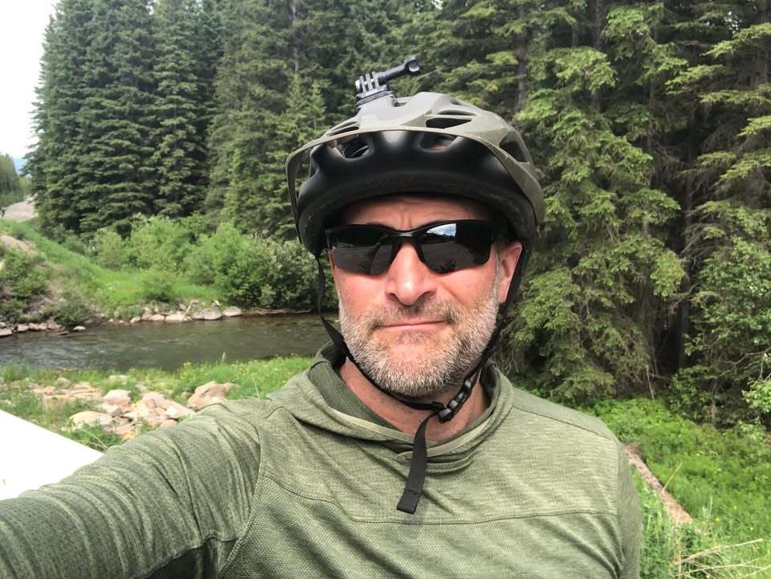
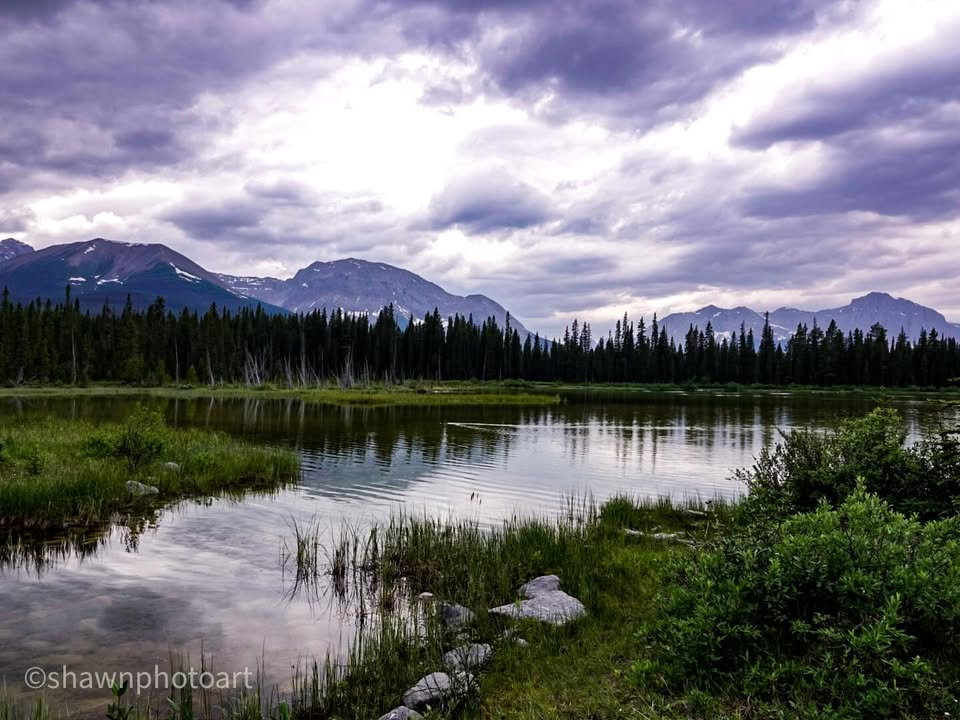
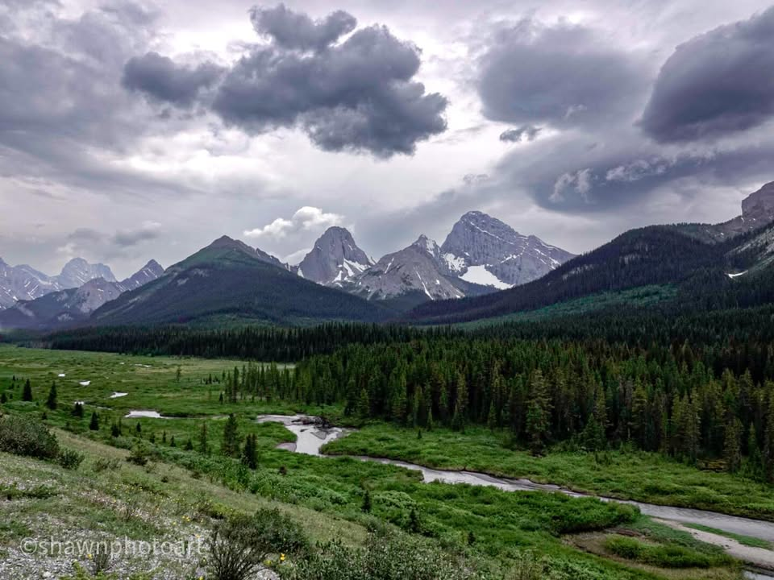
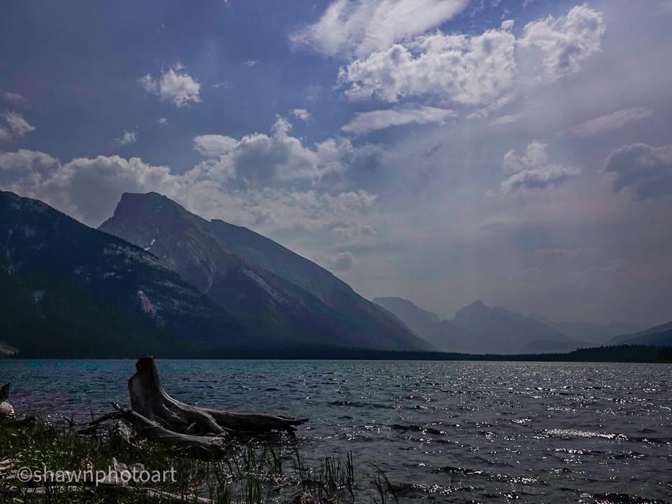
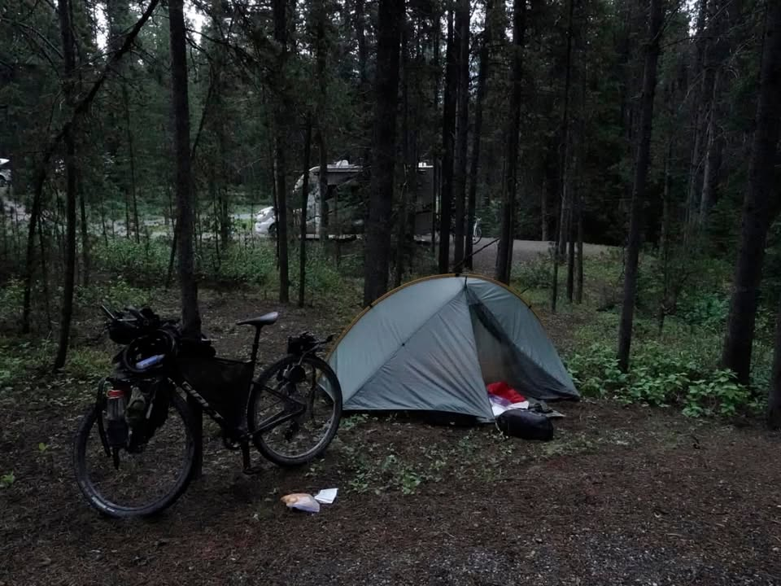

Day 1.. the first official day of my trail Tour.. cramps, Rain, and bears oh my..
With the excitement and anticipation of the days race starting, competitors lined up about every 15 minutes with the people who said they were going to do it in 14 days towards the front. Not being a racer I started at 8 o’clock with the very last group. For about a mile or two, the trail wound through the beautiful town of Banff, and we passed by a castle looking hotel before hopping on the trail. Except for being a little brisk, the weather was perfect. The trail, surrounded by tall skinny pines, wound up and down over the mountain. On each side I was flanked by massive mountains and the views were beyond words.

From the Journey
Going downhill was exhilarating reaching speeds of 25 to 35 miles an hour. But going uphill was some thing I’m not used to. San Antonio sits at 800 feet above sea level and hardly has a Hill in sight. At mile 20-ish both of my legs started to cramp and I had to start walking the uphills. Getting off my bike to walk, both of my legs would lock up. I quickly found that 50 miles in the Rockies in Canada and 60 miles in San Antonio we’re NOT the same thing.
My physical troubles on the first day were due to a couple factors. Not getting into Banff early in the week left me not adjusted to the 6000 feet altitude. Not eating a big salty meal in the morning, or in the evening, left me a little underfed. Not being able to train in similar conditions, really made the first day tough. I was able to cover 50 miles. However, as my tour continues south, I will find my trail legs and be able to cover bigger distances. Finding time to train for riding your bicycle all day is pretty hard in our fast paced world.

From the Journey
My average speed was much less than I expected. I crept along through the beautiful scenery. Crystal clear, Lakes and streams, which I passed very frequently, Made finding water easy. The tall skinny pine trees, which are placed between six and 10 feet from each other, made a thick barrier so that the strong winds really didn’t even affect me. however, camping on the sides of the trail in Canada with the thick trees, mountain laurel, and downed Pines would be next to impossible. Not to mention, I think Canada made it illegal in the national park I’m traveling through.
After twisting and turning on a small trail, for quite some time, the route bumped me onto a large dirt road and after about 10 miles I saw my first Bear.

From the Journey
As I came around the corner, I saw a bear on the left side of the road and stopped about 200 m short. Whipping out my camera I was able to zoom in on it and see it clearly, it was a black bear on the left side. I moved my bear spray bottle from the back of my bike into my hand, just for precautions, and moved up a little slowly making loud noises. To my surprise, as I came more around the corner, to get a better look, I spotted another black bear on the right side of the road. Both of them were still about 75 m in front of me so I had plenty of room and didn’t feel too threatened. Thoughts raced through my head of mother on one side of the road and Cubs on the other. I waited about 10 minutes whistling and trying to get the Bears attention. Hebert can charge at 20 to 30 miles an hour which is faster than I can peddling a good day not to mention aday that I’m cramping and only going about 6 miles an hour.
The bear on the left moved off in the tree line and I couldn’t quite see him anymore. I moved up slowly. The beer on the right seem to be very interested in whatever berries he was eating. I couldn’t wait there forever so I decided to move past him. Passing about 20 feet away from him I was ringing my bell and shouting “hey bear”. He look up at me, casually, with not a bother in the world. It’s good to be a bear.

From the Journey
After grueling through another 10 miles of riding it started to rain. At just about that same time I came across my first campground I could’ve stopped at. But on my map, in another 5 miles there was a re-supply store. So I kept trucking on through the rain and it was well worth it.
I finished the day meeting up with a couple other biker friends that I’ve met, eating a hot pizza, and drinking and orange crush. It’s the simple things in life. Setting up camp in a little bit of a drizzle made it a fitting into a difficult day. But it’s all part of the adventure.

From the Journey